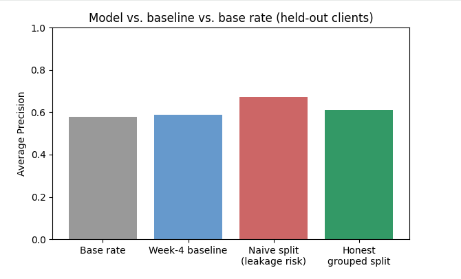
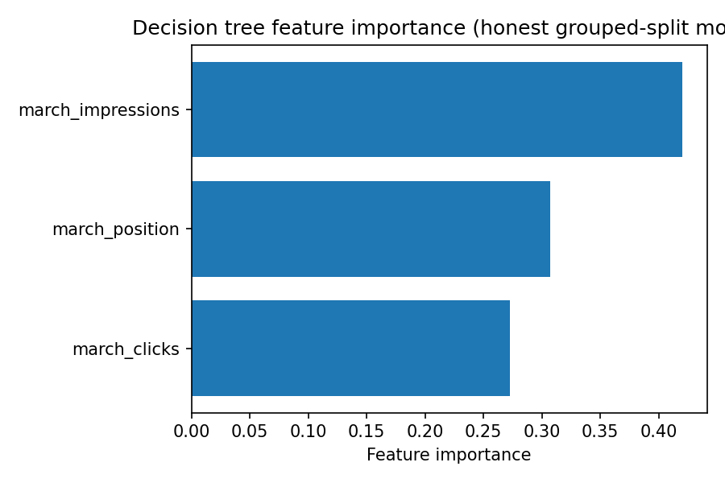

A validated, honestly-evaluated model for ranking content refresh priority from one month of search signals — tested against a transparent rule baseline on 176,738 pages of real production search data.
Content teams sit on portfolios of thousands of pages and cannot manually review all of them every month. Someone has to decide which pages get attention first — and today, that decision is usually a guess based on whichever page an editor happened to notice.
The decision this project supports is narrow and concrete: given one month of a page's search performance, which pages should a content editor look at first, before the next month's report arrives? The person acting on the answer is a content editor with a limited review budget. The cost of getting it wrong is real but bounded either way: a wasted review, or a real decline left unreviewed for another month.
A single hand-written rule can already do part of this job. The question this paper actually answers is whether a small, readable model can do it a little better than that rule — and whether the way we measure "better" can be trusted.
This project uses the fact_content_daily_performance
table from the FlyRank internship warehouse release, hosted on
Hugging Face. Two mid-panel months were used: March 2026 as the
feature window and April 2026 as the outcome window. The final month
in the panel (June 2026) was treated as a sealed test month and was
never used to develop any label or feature logic.
| Slice | Rows (page-days) | Date range |
|---|---|---|
| March 2026 partition | 9,841,378 | 2026-03-01 → 2026-03-31 |
| April 2026 partition | 10,424,730 | 2026-04-01 → 2026-04-30 |
| Pages after aggregation & filtering | 176,738 | one row per (client, page) |
Page-day rows were grouped and summed to one row per client-page pair per month before any modeling — the unit of analysis is a page, not a page-day.
trend_direction, trend_pct — rule-derived
columns. Using either as a label or feature risks the model
re-learning a threshold rule instead of finding real signal.Public-safety note: no client names, raw search queries, or private identifiers appear anywhere in this page, the underlying notebooks, or the repository.
target_decline = 1 if a page's total April impressions
were lower than its total March impressions, else 0. This is an
observed cross-month outcome, not a category defined by a
rule — a deliberate correction after an earlier draft of this project
considered using the rule-derived trend_direction field.
Three signals, all knowable before the outcome window:
march_impressions — total March search impressionsmarch_clicks — total March clicksmarch_position — traffic-weighted average March ranking position
A transparent, hand-written rule: score = 2 × log(1 + impressions),
with a plain reason code for pages with high visibility and a rankable
position. No fitted weights — readable by design.
A depth-3 Decision Tree Classifier. Depth was kept shallow deliberately: a tree a person can print and read teaches more than an opaque model a few points stronger.
A GroupShuffleSplit by client (test size 0.22, seed 42)
ensures no client's pages appear in both train and test. A naive
random split — ignoring client grouping — was also run, specifically
to make the cost of skipping this step visible rather than assumed.
Two independent leakage tests were run over the course of this project, each by deliberately injecting a feature that determines the label by construction and confirming the score jumps sharply:
| Test | Injected feature | Honest score | Score with leak |
|---|---|---|---|
| Week 6 (real warehouse data, cross-month label) | april_impressions | 0.611 (AP) | 0.991 (AP) |
| Week 3 (real warehouse data, quick proxy label) | gsc_clicks | 0.876 (ROC-AUC) | 1.000 (ROC-AUC) |
Both harnesses correctly detected the injected leak, which increases confidence that the "no leakage found" conclusion on the real feature set is genuine rather than a blind spot in the test itself. On the final feature set, no feature correlated with the target above 0.04 in magnitude — no disguised label proxy was found.
All numbers below come from the identical held-out test set — 11 clients never seen during training — scored with the same metric, Average Precision.
| Method | Average Precision |
|---|---|
| Base rate (naive, majority-share) | 0.578 |
| Week-4 rule baseline (recomputed on this test set) | 0.587 |
| Decision Tree — naive random split (leakage risk) | 0.674 |
| Decision Tree — honest grouped split | 0.611 |

Reading this honestly: the model adds real but modest skill — roughly three points of Average Precision above the rule baseline, and roughly three points above chance. The naive split's higher number is not a better result; it is the size of the leakage the grouped split closes.

Nothing here proves that refreshing a page causes a change in performance — only that certain March signals are associated with an April decline.
0.611 vs a 0.578 base rate is a real but small improvement. This is decision-support, not a high-confidence forecast.
The shallow tree produces only a handful of distinct probability values — read "priority" as tiers, not a strict page-by-page order.
Three signals cannot capture content quality, competitor moves, or algorithm changes — a page can decline for reasons invisible to this model.
Trained on 36 clients, tested on 11, from one 17-month snapshot — not validated on clients or periods outside this dataset.
One March/April window was used for every client, without checking each client's individual history depth.
The validated model scores each held-out page with a decline probability, grouped into plain-language priority tiers — not a black-box number alone.
Pages that still carry meaningful visibility but show signs of slipping rank. The closest match in this project's own data to the FlyRank research paper's freshness-window finding (a 7.88:1 growth-to-decline ratio at 31–90 days) — offered as a directional rationale for prioritization, not a causal guarantee.
Limited traffic means limited value in a manual review right now, and any change in a small impression count is closer to noise than signal.
4,438 of 43,247 held-out pages (the bottom 10% by volume) are explicitly flagged as needing extra review before acting — their impression counts are small enough that normal noise could flip the label.
Every number on this page was computed in a public notebook, with a
fixed random seed (random_state=42) throughout, using
scikit-learn's GroupShuffleSplit and
DecisionTreeClassifier.